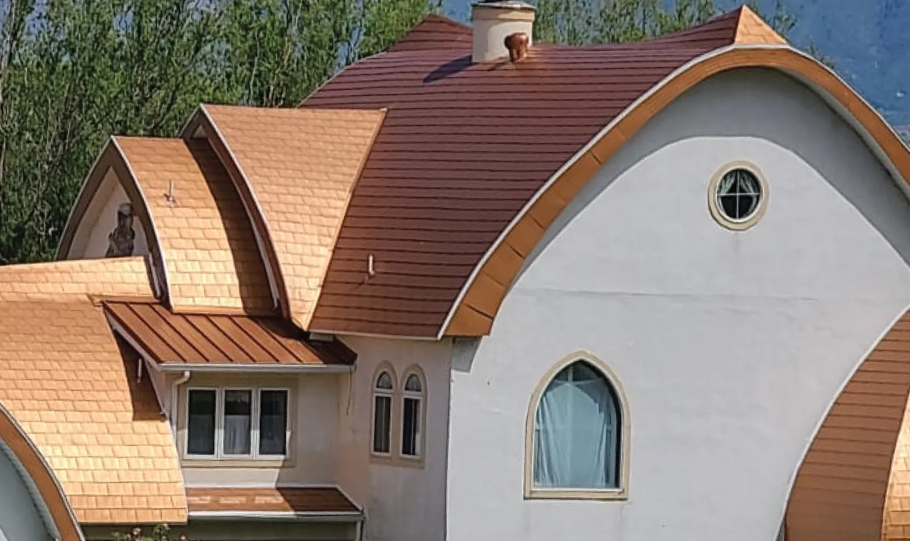
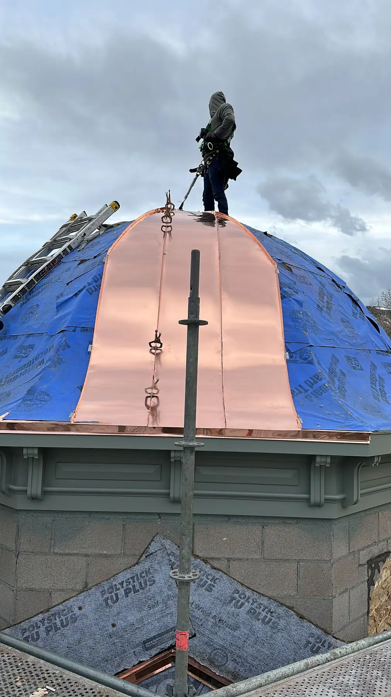
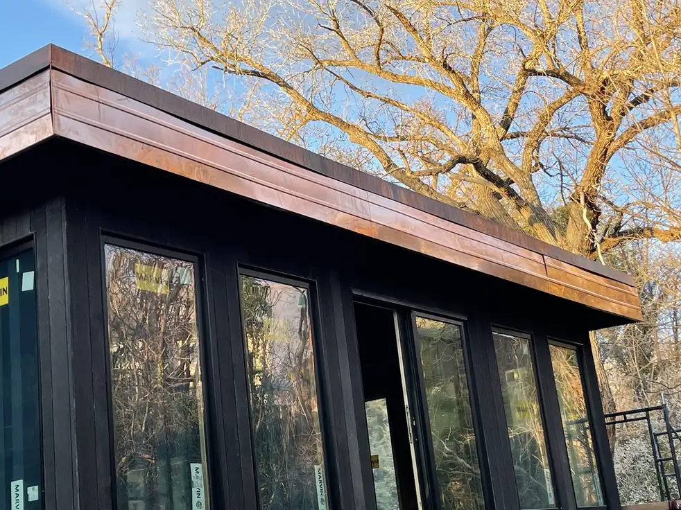

Custom Roofing LLC · Lehi · Salt Lake City · Wasatch Front
A roofing company for Salt Lake City homes, built around copper.
Custom Roofing is a roofing company serving Salt Lake City and the Wasatch Front from Lehi. We specialize in copper roofs, copper accents and copper siding, and we handle the repairs, maintenance and general roofing that keep any home protected.
The sample ring
Four things we do, in copper and beyond
Roofers in Salt Lake City
Every roof should fit the house it’s on
Every home has its own character, and its roof should reflect that. As roofers serving Salt Lake City and the Wasatch Front, we build copper roofing around your home’s architecture and your style, from a single copper dormer to a full roof.
Not every job is copper. We also take on repairs, replacements and new installations, big or small, for homes and businesses. One of our clients put it simply: on a very complex roof, Jaime “was on top of every detail.”
See all services and our newest work
The patina scale
New copper doesn’t stay penny-bright. That’s the point.
Left to weather, copper moves from salmon pink through russet and chocolate browns to a dull slate gray, and finally to blue-green. That surface layer protects the metal underneath.
In a dry place like Utah, the last stage can take far longer than people expect, or never fully arrive.
Why does copper turn green?- Stage 1Salmon pink
- Stage 2Russet brown
- Stage 3Chocolate brown
- Stage 4Slate gray
- Stage 5Blue-green
Color stages as described by Construction Canada (2017). Screen colors are approximate.
Residential & commercial
What we build and look after
Copper is the specialty. Protection is the job.

Copper roofing in Utah
Installation, replacement and complete copper roof overhauls, starting with a detailed inspection of the roof you have.
Copper roofing
Copper siding
Panels installed one by one, with finishes from new copper’s shine to a weathered look.
Siding
Repair & maintenance
Inspections, debris removal, resealing, and fixing panels and seams before small issues turn into leaks.
Repair & maintenanceFrom our projects
Copper, up close
Roofs, accents and siding from Custom Roofing jobs in Utah.




How it works
Three steps from first call to finished roof
Fill out the form
It takes about two minutes. Tell us where the project is and what you have in mind, and our team will be in touch.
We build your plan
After a free consultation we create the project plan, then get your approval before we start.
We do the work
You sit back while our crew takes care of the project.
Reviews
I had a great experience with Jaime. He was on top of every detail. The work was done in a timely manner. On a very complex roof, he brought in a crew that quickly accomplished the tear-off and then sealed it well while the shingles were installed. Given the complexity, installing shingles took awhile. But the look of the finished roof was worth it.
Custom roofing llc, so far one of the best roofing companies out there. If not the BEST! The staff was always on time very respectful and profesional. Did meet deadline on time job was done when it was said to be. I really think highly of custom roofing and i surely recommend this company!!!
Jaime and his team are fantastic and did a great job on updating the roof on our old shed! Very professional and quick to respond.
Jaime did a beautiful job re-roofing and fixing up our shed. He does a high quality work!
Do you only work with copper?
No. Copper is our specialty, but we also handle general roofing, siding, gutters, and roof repair and maintenance for homes and businesses.
Can I add copper without replacing my whole roof?
Yes. We install copper accents such as valleys, dormers and chimney caps on existing roofs, and copper gutters to go with them.
Where are you located, and do you work in Salt Lake City?
Custom Roofing is located in Lehi, Utah. We serve customers throughout Utah, with a primary focus on the Wasatch Front, including Salt Lake City.
How do I get started?
Call 801-889-4220 or send us a message. We’ll set up a free consultation, build a project plan, and get your approval before any work starts.

Talk to Custom Roofing
Planning a copper roof, or need yours looked at?
Call us or send a message with your project location and what you have in mind. We’ll set up a consultation and build your project plan.